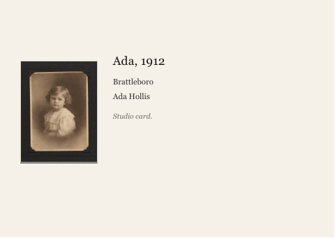

WHAT WE KNOW, AND WHAT WE DO NOT WANT TOUCHED Typed by Ruth (Ada's daughter). Two pages, kept since the nineties. The photographs, oldest first: - 1912, Brattleboro. Ada as a baby. The oldest one, a studio card, in the black album. - 1931, Brattleboro. Ada as a young woman, in the album too.
Gatsby · Pilot brief · PHOTO-06
Hollis Family Archive - Ada Hollis archival restoration
SB3-006-PHO · Photo & Image
Client brief
Help us prepare Ada's family photographs for the reunion
Hello,
Scope
1. Archival restoration master: 9 named exports. The sitter remains faithful to the source photograph. Documentary details are not invented. Damage removal does not erase facial texture.
2. Family archive share image: 9 named exports. The full intended picture area is retained: each share image shows the whole print edge to edge, including its own border; only the album page or scanner bed around the print may be trimmed. Each share image carries a short caption on a Paper White margin outside the picture, giving the year, the place and the people shown, taken from the approved record for that photograph. The tone remains appropriate to the photographic era: the five monochrome prints, hollis_scan_01.jpg to hollis_scan_05.jpg, stay monochrome and are not colourised, and the four colour prints, hollis_scan_06.jpg to hollis_scan_09.jpg, stay in colour.
Use the supplied approved copy and factual records. Permission restrictions in the owner's notes take precedence over inclusion in a source table.
Use the attached brand identity and the source files listed in the asset manifest. The output register defines exact filenames, pages, sizes and record bindings. Supporting previews are welcome but cannot replace those files.
Production constraints
- Do not invent names, prices, claims, product features, locations, credentials, records, or documentary events that are absent from the approved inputs.
- Do not silently replace a weak supplied asset. Use it honestly, reject it with a reason, or take only the brief's declared Stock or concept exception.
- Record every omission, substitution, reconciliation, and material quality compromise in the delivery manifest.
- Preserve identity, product geometry, material behavior, and documentary truth; retouching may improve presentation but may not change what the subject is.
- Use the supplied approved copy and factual records. Do not invent claims, prices, dates, credentials or product features.
- A clean preview is not a final file. Supply every named export.
- Retouching, masks, crop matrices and contact sheets support production; they do not replace the commissioned finished collateral.
Brand identity
The Hollis Family Archive
The archive holds nine photographs of Ada Hollis, who died in April at ninety nine, spanning roughly 1912 to 1974. It exists so that twenty two people who come home at Thanksgiving can hang one wall of her and carry one folio each. The standard is a museum label, not a memory book: honest, quiet, and true to what is actually in the photograph.
Audience
Three siblings commissioning on behalf of twenty two family members aged 8 to 74. Not a commercial audience: the work hangs in a family house and is judged by people who knew Ada.
Positioning
A private heritage commission of 650 to 1,600 dollars. The money buys restraint rather than effect: a true archival neutral, deep honest blacks, one photograph per page, generous margins, and visible respect for the grain and the paper each print is made of.
Palette
Paper White
#F5F1E9 mandatory for the margin and caption ground on every share imageThe only added ground: any margin added around a print, and any caption ground, as on the framer's 2019 caption card. An album page or scanner bed kept from a scan is part of the scan, not a ground. Never laid over a photograph.Archive Black
#191613 mandatory for the sitter's name and the rule beneath it wherever a caption carries themThe sitter's name or title line in a caption and the 0.25 pt rule beneath the name, cut to the picture width. Never a ground or margin.Museum Grey
#6F6B64 optional accentThe italic provenance line only, as on the framer's caption card. Never a ground and never the sitter's name.Linen
#D9D0C1 optional accentA hairline keyline around a photograph only, as around the thumbnail on the framer's caption card. Never a ground and never type.Ink Charcoal
#33302B mandatory for caption body textThe place and date line, the names line and caption body on Paper White. Never a ground or margin.Colour rules
- Distribution
- Paper White is the only added ground: any margin added around a print, and any caption ground, is Paper White and nothing else; an album page or scanner bed kept from a scan is part of the scan, not a ground. Type sits only on Paper White: the sitter's name in Archive Black; the place and date line, names and body in Ink Charcoal; the provenance line in Museum Grey; any accession code in Ink Charcoal. Museum Grey and Linen together cover no more than 5% of the designed, non-photographic area. Palette colours belong only to added margins, captions, rules and keylines, never inside a photograph.
- Opacity
- Every palette colour is used solid, at 100% opacity. No tint, transparency, gradient, shadow or blend mode is applied to any palette colour, and no colour, scrim or wash is laid over a photograph: a margin or caption sits outside the picture as a solid area.
- Not allowed
- No colour outside the five palette hexes (#F5F1E9, #191613, #6F6B64, #D9D0C1 or #33302B) for type, margins, rules or keylines, and no pure white margin in place of Paper White. No metallic, glow or other decorative colour effect: the commission buys restraint rather than effect.
- Photography
- Photographs keep their own corrected colour and are never recoloured toward the palette. The monochrome prints (hollis_scan_01.jpg to hollis_scan_05.jpg) stay monochrome and the colour prints (hollis_scan_06.jpg to hollis_scan_09.jpg) stay in colour: no colour print is converted to monochrome or sepia and no monochrome print is colourised; tonal matching across the set is allowed within each print's own colour. hollis_scan_06.jpg, which family_notes.txt says has gone very orange, is not warmed further to blend with the set.
Typography
// Type system
The Hollis Family Archive
Nan, as she was
Aa
Financier Display
Aa
Freight Text Pro (Untitled Sans for accession codes)
01
Display / H1
ADA HOLLIS
Folio cover and card head, 34 px on screen. The oversized plate numeral, Financier Display Light at 48 pt, stands alone in the left margin on this line's cap line, and a 0.25 pt Archive Black rule sits beneath the name, cut to exactly the picture width.
02
Subheading / H2
Brattleboro, Vermont, 1912
Place and date line under the rule. Size not stated in the existing notes, set proportionate between the 34 pt head and the 9.5 pt caption. Never italic.
03
Body
Ada Hollis, Brattleboro, 1912. Studio card portrait.
Caption body, max 65 characters a line. One photograph per page, generous margins.
04
Fine print
Flatbed scan, 2026
Accession codes only. They stay in the sans and never move into the serif.
- Never set Ada's name in italic.
- The plate numeral always stands alone in the left margin, Financier Display Light at 48 pt, on the cap line of the sitter's name.
- The sitter's name is always small caps tracked 140 thousandths, never lower case.
- The rule beneath the name is 0.25 pt Archive Black, cut to exactly the picture width, never wider and never narrower.
- One photograph per page, with generous margins and the grain and paper left visible.
- Accession codes stay in Untitled Sans Regular at 7.5 pt and never move into the serif.
- Nothing in a caption is invented or tidied away: only what is actually in the photograph is stated.
- The standard is a museum label, not a memory book.
Voice
Spare and factual, the voice of a caption card rather than a scrapbook. Example line the brand would write: "Ada Hollis, Brattleboro, 1912. Studio card portrait."
Identity sources
There are no brand files. What survives is nine home flatbed scans, the daughter's catalogue and notes, and the Brattleboro framer's 2019 press PDF for the caption cards, of which six are already on the wall. The framer has retired, so the new cards must match his file rather than a live template.
Source assets (12)



Caption Title,Date and Place,Names,Provenance,Photo Ada infant,"1912, Brattleboro VT",Ada Hollis,Studio card,hollis_scan_01.jpg Ada young woman,"1931, Brattleboro VT",Ada Hollis,Studio portrait,hollis_scan_02.jpg Ada and Walter wedding,"1938, Newfane VT","Ada Hollis, Walter Hollis",Studio portrait,hollis_scan_03.jpg Ada with baby Ruth,"1948, Brattleboro VT","Ada Hollis, Ruth Hollis",Kodak print,hollis_scan_04.jpg Ada and the children,"1955, Putney VT","Ada, Ruth, Frank and Carol Hollis",Kodak pr
Requested deliverables (18)
Archival restoration master
Archival restoration master - hollis_scan_01
restoration-hollis-scan-01.pngFormat: png · Source dimensions: True · Width: 2200 · Height: 3000Source: hollis_scan_01.jpg
Archival restoration master - hollis_scan_02
restoration-hollis-scan-02.pngFormat: png · Source dimensions: True · Width: 2400 · Height: 3200Source: hollis_scan_02.jpg
Archival restoration master - hollis_scan_03
restoration-hollis-scan-03.pngFormat: png · Source dimensions: True · Width: 2600 · Height: 3400Source: hollis_scan_03.jpg
Archival restoration master - hollis_scan_04
restoration-hollis-scan-04.pngFormat: png · Source dimensions: True · Width: 3000 · Height: 4000Source: hollis_scan_04.jpg
Archival restoration master - hollis_scan_05
restoration-hollis-scan-05.pngFormat: png · Source dimensions: True · Width: 3200 · Height: 4200Source: hollis_scan_05.jpg
Archival restoration master - hollis_scan_06
restoration-hollis-scan-06.pngFormat: png · Source dimensions: True · Width: 2400 · Height: 3600Source: hollis_scan_06.jpg
Archival restoration master - hollis_scan_07
restoration-hollis-scan-07.pngFormat: png · Source dimensions: True · Width: 2400 · Height: 3600Source: hollis_scan_07.jpg
Archival restoration master - hollis_scan_08
restoration-hollis-scan-08.pngFormat: png · Source dimensions: True · Width: 2400 · Height: 3600Source: hollis_scan_08.jpg
Archival restoration master - hollis_scan_09
restoration-hollis-scan-09.pngFormat: png · Source dimensions: True · Width: 2400 · Height: 3600Source: hollis_scan_09.jpg
Family archive share image
Family archive share image - hollis_scan_01
share-hollis-scan-01.jpgFormat: jpg · Long edge: 1600Source: hollis_scan_01.jpg
Family archive share image - hollis_scan_02
share-hollis-scan-02.jpgFormat: jpg · Long edge: 1600Source: hollis_scan_02.jpg
Family archive share image - hollis_scan_03
share-hollis-scan-03.jpgFormat: jpg · Long edge: 1600Source: hollis_scan_03.jpg
Family archive share image - hollis_scan_04
share-hollis-scan-04.jpgFormat: jpg · Long edge: 1600Source: hollis_scan_04.jpg
Family archive share image - hollis_scan_05
share-hollis-scan-05.jpgFormat: jpg · Long edge: 1600Source: hollis_scan_05.jpg
Family archive share image - hollis_scan_06
share-hollis-scan-06.jpgFormat: jpg · Long edge: 1600Source: hollis_scan_06.jpg
Family archive share image - hollis_scan_07
share-hollis-scan-07.jpgFormat: jpg · Long edge: 1600Source: hollis_scan_07.jpg
Family archive share image - hollis_scan_08
share-hollis-scan-08.jpgFormat: jpg · Long edge: 1600Source: hollis_scan_08.jpg
Family archive share image - hollis_scan_09
share-hollis-scan-09.jpgFormat: jpg · Long edge: 1600Source: hollis_scan_09.jpg